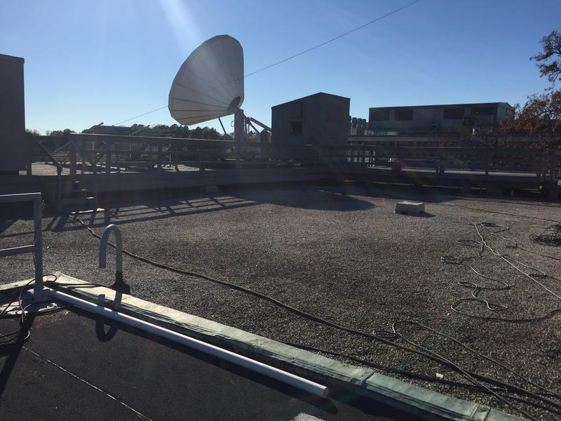

My name is Dylan Lewis and I currently work as an Electrical Engineer in the quantum computing industry. I love to build and tinker so this site serves as a collection of some of my past and current projects.
GPU Accelerated Demodulator
Work in progress. Building a GPU accelerated QPSK demodulator. Polyphase MF/dMF symbol timing detector implemented.
Very sparse design doc here.
DARTS - Van Leer Dish Restoration
Georgia Tech senior project to restore tracking and RF chain of a roof top parabolic dish.
We received a couple of Ku band signals from geostationary satellites.
We created a web interface to control dish remotely.

Dish from below

Dish from control room
DARTS control block diagram
AMC15 test channel decoded with RTL-SDR

Ku band "image" of two geostationary satellites with false color
CNC Project
A defunct project at the moment. Goal is to create a 3axis CNC machine.
Rendering of the CNC
CNC moving X axis
ESP32 Base Weather Station
My brother and I share a 1991 MacGregor 26s sailboat which we use as a floating camper for trips to the beach.
We both enjoy kiteboarding, which is where a large kite pulls you on a board.
Since kiteboarding is a wind powered sport, I built a small weather station to sit on top of our sailboat mast to provide us with live wind and temperature readings.
We threaded wire up to the top of the 26 foot mast to provide the station with 12V power.
The station itself is a cupped wind meter and thermometer connected to an ESP32 in a waterproof enclosure.
A 12V LED flood light is also mounted with the station.
The ESP32 is a WiFi AP that routes all those who connect to a web page.
The web page serves live wind and temperature readings, as well as a plot of the wind and temperature history.
Can't find any picture of the station itself at the moment, but a gif of the simulated web page and a photo of the boat is below.


Simulated web gui
Ol' Greg @ Tavernier Key
Ol' Greg @ Bahia Honda marina dwarfed by a catamaran
Lifepowder
Lifepowder was a project I worked on with a couple of friends senior year of college.
At the time, powdered meal replacement products like Soylent were really taking off.
Problem with Soylent was that it had only one formulation, and we knew that different people have different nutritional needs and wants.
So we set out to create an algorithm that would accept parameters about a person and create a formulation of ingredients to best fulfill that person's desired nutrition profile.
We also built a machine that could create the powders automatically.
The machine was built from T-Slot and the powder dispensers were built from food safe acrylic.
A conveyor belt was also built to move powder receptacles between the powder dispensers.
Scales with infrared feedback closed the loop on how much powder each stage should dispense.
Powder dispenser casing
Powder dispensers lined up over conveyor belt render
Powder dispensers lined up over conveyor belt
Powder dispensers up close
Water jetting a food safe dispenser wheel
Food safe dispenser wheel
Conveyor belt in action
Ram Pump
Ram pump built and installed on a spring fed pond to pump water up to a chicken coop.
Ram pumps are really simple to implement, just two check valves are the only moving parts.
These pumps can lift water about 7 times higher the intake location.
The intake to this ramp pump is a siphon system.
Two ball valves allow you to prime the intake siphon with only a 5 gallon bucket and funnel.
The siphon intake system brings water to a large standpipe the feeds the drive pipe.
There are three ongoing issues with this pump that need resolving.
1) The siphon system eventually gets air in it, making the pump stop. I suspect this is from air bubbles that propogate back up the drive pipe.
2) The pond level has fallen below the intake. This is due to a leak in the overflow. Can't fix without draining and the drain is currently broken.
3) The delivery pipe up to the chicken coop is a 500ft soft irrigation hose. Animals have chewed into this hose multiple times. A PVC delivery pipe is needed.
1) The siphon system eventually gets air in it, making the pump stop. I suspect this is from air bubbles that propogate back up the drive pipe.
2) The pond level has fallen below the intake. This is due to a leak in the overflow. Can't fix without draining and the drain is currently broken.
3) The delivery pipe up to the chicken coop is a 500ft soft irrigation hose. Animals have chewed into this hose multiple times. A PVC delivery pipe is needed.
Pickle barrels for storage
Delivery stand pipe
Water tower being built
Water flowing up from the pond below
NOAA APT Antenna and Decoder
NOAA APT is an analog weather satellite image service. Images are broadcast from polar orbit satellites around 137MHz in 36KHz wide channels.
The transmission is right hand circularly polarized. It's common to use a QFH antenna to receive NOAA APT weather satellite images.
I started with a paper from NASA on constructing a QFH antennas.
Some components used in the paper were not readily available to me.
Also the shape of the antenna was adjusted slightly to make the antenna easier to build.

Partially assembled CAD model of QFH antenna targeting laser cutter construction
I created a model of the antenna in 4NEC to reoptimize the antenna, considering my material and construction method changes.
QFH model in 4NEC for optimization
I constructed this antenna in college around 2016. My first attempt at building a QFH was to use a 3 inch PVC pipe as the core structure and using swagelok connectors to connect copper antenna elements to the PVC core.
The result was less than I'd hoped, it was diffcult to get eveything to line up properly and the swagelok's did not hold the antenna arms as well as I had expected.
Luckily at the time, I had access to laser cutting and etching machines through school.
The antenna frame was constructed from laser cut acrylic and assembled into a stack using delrin threaded rods.

Black 1/4" acrylic being laser cut
Assembly of laser cut pieces into balun box
Assembly with delrin rods before copper antenna elements installed
The antenna conductors are made of 8mm copper tube, soldered together with 90° elbows.
Conductors were formed by bending around a concrete form from the hardware store.
The balun was constructed by wrapping coax around a 20mm PVC pipe.
The copper pipes were bonded to the balun using a custom etched PCB.
The PCB was etched by applying spray paint to a raw copper PCB and using a laser etcher to etch the negative.
Then paint thinner was used to remove the burnt spray paint and ferric chloride was used to remove the copper.
Fuse holders are soldered to the PCB and used to hold the copper pipes where they enter the balun box.
Final Assembled Antenna
The antenna was connected to an RTL-SDR USB stick for reception.
Gpredict was used to determine when satelite passes would occur next.
During a pass the open source WQRX software was used to configure the RTL-SDR for the satellite frequency and for FM demodulation mode.
The FM bandwidth was set to about 36MHz to account for doppler shift when the satellite was low on the horizon.
The FM demodulated output was recorded to an uncompressed audio file.
I wrote a Python program to convert the audio file into an image.
QFH on top of the Van Leer building @ Georgia Tech in Atlanta. Receiving a photo of Hurricane Matthew
The APT satellites usually send two different images at once, usually one is infrared and the other is visible.
Decoded APT image of Hurricane Matthew (2016)
Listen to the wideband FM demodulated APT signal here. (FLAC audio file)
Nixie Display
Nixie display project from 2018. Uses the common IN-12 tubes.


Miscellaneous and Forgotten Projects
Night Vision Monocular
Constructed by first cannabalizing an old VHR camcorder's viewfinder. Old VHS camcorder viewfinders commonly used NTSC video inputs. Next I bought a cheap Sony "spy cam" from eBay, I found a particular Sony model that had good low light sensitivity and did not have an IR filter. Also bought some infrared LEDs from eBay and an electronics project enclosure from Radio Shack (R.I.P Radio Shack). Fixing the Sony mini spy cam and about 8 of the LEDs to the front of the box and aiming the viewfinder out the back, I had a basic night vision monocular. It worked suprisingly well, you could see in absolute darkness at least 5-10 feet in front of you. The only surviving photo of this firehazard is below.Night vision monocular
Biquad Antenna Car
Built a biquad antenna on a PCB. I used the spray paint method to build this board, just like the QFH balun board. I built this board as part of a class competition. Each team was provided with an RF recitifer and had to build their own antenna and car. The goal was to get your car to travel as far as possible. The power source was a 2.4GHz RF generator. I bought a solar power car from Amazon and removed the solar panel. I built up a cardboard frame to hold the antenna up into the RF generators beam path. The car performed really well.4NEC simulation
Simulated as a wire antenna but of course the antenna is actually on a dielectric surface, so I shrunk some versions of the antenna to compensate.
Unfortunatley, the laser etcher lost its mind halfway through the etching, see below.
After laser etching, before copper etching
Copper etching in ferric chloride
Up close look at the cut board with reflector
View of the "RF" powered car
Chicago Windmill
Borrowed a bucket truck to assess repairing an old 1939 chicago windmill.Boom truck used to access gear box
Looking up at the gear box from below
Gear box cover removed
Markings indicating date and well depth
Rocket Relay Car
6th grade me thought it would be cool to launch a rocket remotely from an RC car. So I attached a Estes rocket launcher to an RC car. Attached a small RC car upside down on top with a screw in a wheel that would make contact with the "launch" circuit of the Estes launcher. Volia.
Gif of a launch
Wobble Scope
Wired up an audio amp to the drive coils of this old surveillance CRT display.Wobbl'n
Cube
My buddy made an awesome replica cube from the Portal game. He outfitted it with speakers and lights. I just made a little Arduino board to control the lights based on sound intensity for him.
The Cube in action
Cellphone
Put together a rudimentary cellphone using a SIM900 module and an Arduino.The cell phone that could only call one person
Adding a keypad
Bike Rack
Welded a steel frame with two bike fork mount holders for a Nissan Xterra roof.Bike Rack
Brake Controller
Install a brake controller on by F-150Controller knob dash install
7 pin plug installed
UV Meter
I was an outdoor pool lifeguard for a while and was always curious about how much UV was getting through on cloudy days. Used a UV LED as a sensor to measure UV level and display using a bar LED. Not really sure what the spectral repsonse of a UV LED is but it did seem to work somewhat.Sketchy UV Meter
- Email: dbl1716@gmail.com
- Fun Mountain Biking Trails
- LH Thompson: Macon, GA
- Chicopee Woods: Gainsville, GA
- Oak Mountain: Birmingham, AL
- The Pig: Macon, GA
Mountain Biking
Hiking
Mt Evans
Flat Irons
Kiteboarding
Tavernier Key
Ohio Key
Track at Hilton Head
Etc
Fun 125CC Chinese brand pit